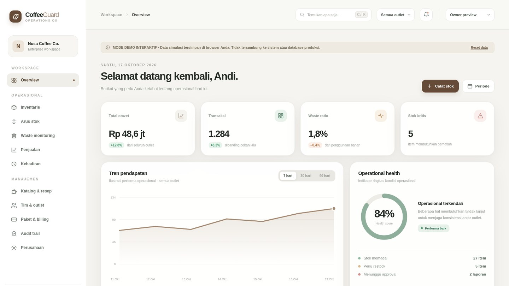
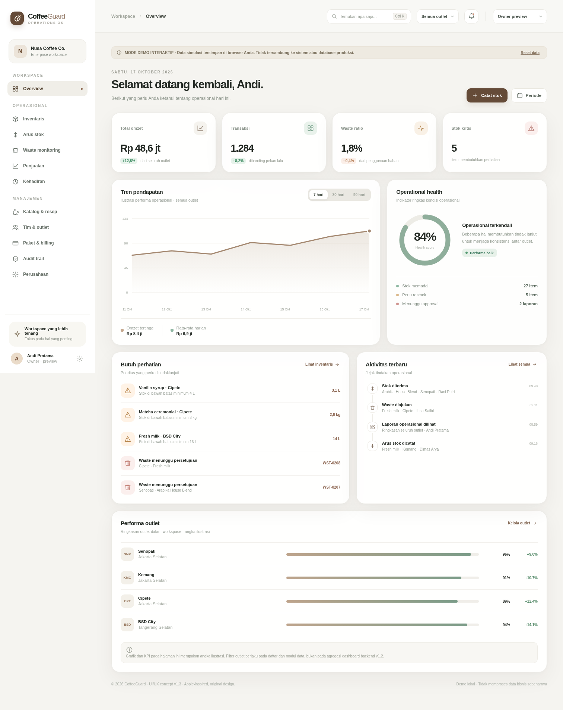
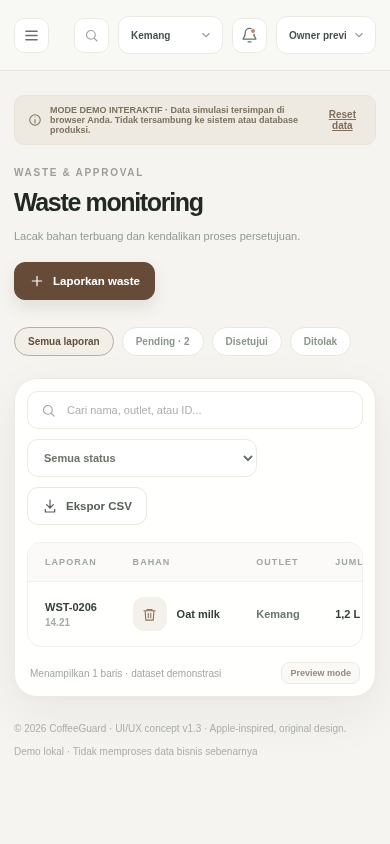

01 / Business system · SaaS
CoffeeGuard.
A coffee-shop operations platform designed to help owners monitor inventory, stock movements, waste, sales, staff, and outlet activity in one workspace.

Problem & product direction
CoffeeGuard is positioned as a SaaS web platform for coffee-shop operations. Its product direction focuses on inventory visibility, ingredient stock movement, waste reporting, and operational workflows. It is not positioned as a replacement for a complete point-of-sale system; external POS integration has not been verified.
Modules represented in the source
The supplied project package documents and includes the following modules:
- Authentication, user roles, company/workspace, and multi-outlet management.
- Users, employees, categories, products, ingredients, suppliers, and consumption rules/recipes.
- Inventory, stock movements, and waste reports with approval workflow.
- Sales/internal transactions and attendance.
- Dashboard, audit logs, subscriptions, plans, and payment administration.
- Daily-close report preview. This is read-only and does not create a persistent close snapshot or lock a period.
Standalone visual demo
The screenshots below come from the project's separate interactive UI/UX demo. The demo uses fictitious browser-local data and localStorage. It is not connected to the Laravel API or a real database, and role selection in the demo is a visual preview rather than backend authorization.


Documented validation snapshot
According to the development handoff dated 3 November 2026, the package records these checks:
- Frontend Node tests: 9 passed, 0 failed.
- JavaScript syntax and frontend publish checks: passed.
- PHP syntax lint: 119 files passed; Laravel route registration: 98 routes loaded.
- Backend static verification: passed.
- Offline browser smoke: 42 mocked API requests passed. This did not use a live Laravel API or database.
PHPUnit was blocked by missing runtime extensions and Composer. MySQL 8 integration/concurrency, live API UAT, backup/restore, deployment, and rollback rehearsals were not run in the supplied environment. Production readiness is therefore not verified.
Implementation notes
The supplied handoff identifies Laravel 13 / PHP 8.3+ for the API, MySQL 8 as the target database, and a JavaScript frontend. The project package also contains tests, CI configuration, migrations, and staging documentation. No production deployment, production database, or real production credentials are included in the handoff.
The backend source package is marked proprietary. This public portfolio page therefore presents a case study and screenshots only; it does not publish the full CoffeeGuard application source.